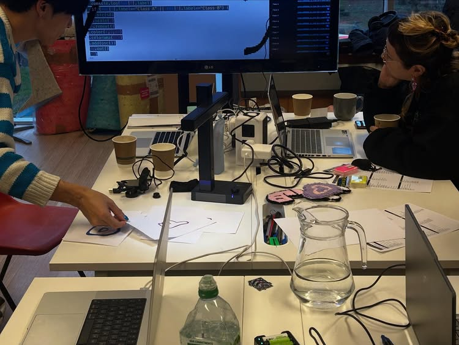

COMPUTALA: Live Coding with Teachable Machine Bootcamp Residency. Led with Naoto Hieda at New Media Art Club, Leicester, UK.



Text by Ngo Chun Phoenix Tse
This zine emerges from the shared experimentation and conversation during the Hydra Live Coding with Teachable Machine Bootcamp Residency, organised by New Media Art Club in January 2026. The bootcamp brought together Sian Morrell, Ngo Chun Phoenix Tse, and Jash Yuan as bootcamp residents, led by Flor de Fuego and Naoto Hieda. Across the bootcamp, the artists explored live visual coding on Hydra, engaging with machine learning, as tools for thinking rather than solutions to be optimised. The outcome of this process is a collective projection installation developed for COMPUTALA 2026, presented by LCB Depot and New Media Art Club, with support from Arts Council England. This year, the festival reflects AI as an urgent and widely debated subject. COMPUTALA’s interest lies not in technological novelty, but in critical discourse around how artificial intelligence is embedded within creative practice and everyday life. The installation responds to the exhibition theme Robots for a Safer World, originally framed as a policy challenge by the previous UK government. Yet Robots for a Safer World is a curious phrase. It carries the tone of science fiction optimism rather than the material realities of nuclear decommissioning, deep-sea engineering, or extractive labour. It imagines the robot as a helper rather than worker, companion rather than mechanism. The language is gentle, even comforting, masking the complex systems of power, labour, and responsibility that automation inevitably reshapes. During the Hydra bootcamp, we approached these tensions through practice. Using Hydra as a live visual coding environment, we explored how real-time graphics could function within performance contexts. Alongside this, we worked with Teachable Machine, engaging machine learning not as an opaque intelligence but as a system shaped by input, gesture as well as repetition. Rather than building autonomous agents, we focused on interaction, responsiveness, and miscommunication. From this process emerged a series of questions addressed to the audience. These questions are projected alongside simple hand gestures for greeting and recognition, forming a loop of call and response between human bodies and machine vision. These questions move between the everyday and the philosophical, from lived interactions with devices to longer traditions of speculative thought, recalling works such as I, Robot and Do Androids Dream of Electric Sheep?. They are not intended to be answered correctly, but to reveal how deeply machines already shape our habits, memories, and sense of self. As artists working closely with coding and AI, we are interested not only in intelligence, but in warmth: how computational art might remain attentive to vulnerability and care. We attempt to recognise ourselves within systems we continue to build. This projection work presents a series of questions addressed to the audience, accompanied by simple hand gestures for greeting and recognition. Interpreted through machine vision, the gestures create a loop of call and response between human bodies and computational systems. The questions move between everyday experience and speculative thought, reflecting on how machines shape habits, memory, and self-awareness. Rather than seeking correct answers, the work foregrounds interaction, misrecognition, and care, exploring how computational art might retain warmth and attentiveness within technological systems.